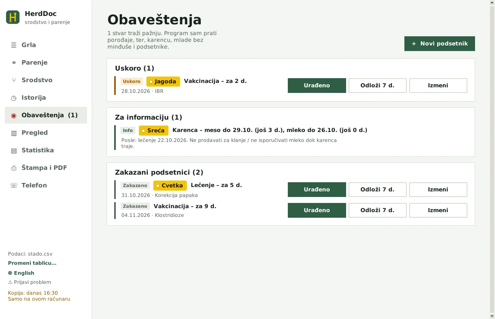

🐖
Prašenje na vreme
Spisak krmača pred prašenje sa najranijim i najkasnijim datumom, da pripremiš prasilište.
HerdDoc prati svaku krmaču od osemenjavanja do prašenja, broji prasad u leglu, meri prirast u tovu i pazi da nerast ne bude u srodstvu sa krmačom.
Windows 10/11 + aplikacija za telefon · radi bez interneta · 6 jezika

Spisak krmača pred prašenje sa najranijim i najkasnijim datumom, da pripremiš prasilište.
Upiši merenja težine i vidi dnevni prirast i koja grla zaostaju.
Program pamti lečenja i upozorava dok traje karenca za meso.
Iz upisanih prašenja HerdDoc zna koliko prasadi je koja krmača donela. Ocene i rang lista pomažu da za priplod zadržiš potomke najplodnijih krmača, a da slabije krmače na vreme izdvojiš.
Kad se nazimice iz sopstvenog zapata pare sopstvenim nerastom, brzo raste srodstvo. HerdDoc za svaku krmaču računa očekivani inbriding prasadi sa svakim nerastom i predlaže najbolji izbor. Više u vodiču Rodoslov i inbriding, a datum prašenja brzo izračunaj u kalkulatoru.
Prosečno 114 dana (3 meseca, 3 nedelje i 3 dana), obično između 110 i 120 dana.
Ciklus teranja kod svinja traje oko 21 dan. Ako krmača nije ostala suprasna, ter se vraća oko tri nedelje posle osemenjavanja.
Da. Svako grlo ima karton, a merenja težine pokazuju dnevni prirast. Grla možeš da označiš kao prodata ili neaktivna, a istorija ostaje sačuvana.
Besplatno do 20 grla posle 30 dana probe. Paketi su od 49 € godišnje (do 50 grla), 79 € (do 100), 149 € (do 500) i 299 € bez ograničenja.
Posle toga besplatno do 20 grla. Za veća stada od 49 € godišnje.